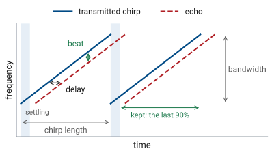
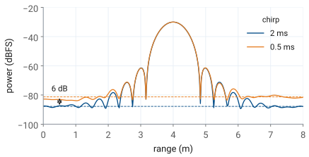
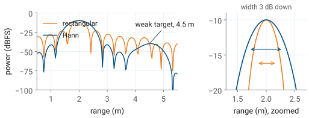
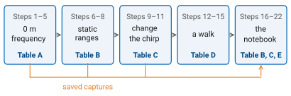
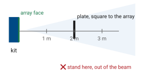

L28 - FMCW on the Phaser#
FMCW on the Phaser
Find your kit’s 0 m frequency, then measure range, resolution, and a walk on the range waterfall.
Lesson 28 and the L28 Lab · Antennas, Phased Arrays, and Radar Systems · Dr. Neil Rogers
Printing
To print the slides, switch to present mode and print: one slide a sheet, with room for notes. Print from read mode for the whole lesson and lab.
Learning Objectives
- I can calculate range resolution, unambiguous range, and Doppler shift for a given radar waveform.
- I can describe FMCW radar operation and configure an FMCW waveform on the ADALM-PHASER.
- I can process FMCW radar data to produce range, range-waterfall, and range-Doppler results.
This page is the lesson and the L28 Lab together. Read the lesson half before class and do Part 1 of the lab packet from it; in class we work the lab half on your kit. Lesson 26 measured range as a round-trip delay and showed that a chirp gives a long transmission the resolution of a short pulse, \(\Delta R = c/2B\). It left one problem open: a target 3 m away returns its echo after 20 ns, far too short for the PHASER’s 0.6 MSPS receiver to time. The lesson shows how a frequency-modulated continuous-wave (FMCW) radar converts that delay into a frequency of a few kilohertz, how one FFT turns the frequency back into range, and what sets the resolution and the farthest range the radar can report. The lab then measures each of those on your kit, and it is the first stage of the radar your final report describes.
A Chirp and Its Echo

The transmitter sweeps \(B\) in \(T_s\), then starts again.
The echo is the same ramp, late by the round trip.
The gap between them, the beat, is constant.
An FMCW radar transmits continuously, and its frequency climbs linearly across a bandwidth \(B\) during each chirp of length \(T_s\). The echo from a target at range \(R\) is a copy of the transmitted chirp delayed by the round trip,
which is 6.7 ns for every meter. The receiver compares the echo with the chirp that is still going out. Because both ramps climb at the same rate, the echo is always below the transmitted chirp by the same frequency, and that difference is the beat frequency \(f_b\).
The lab runs the Phaser app’s presets, and the packet gives their settings. This lesson works every method on a chirp that no preset uses, \(B = 400\) MHz in \(T_s = 2\) ms from 10.0 GHz, so that each worked number shows the method and leaves the preset’s numbers for Part 1. The start frequency never enters the beat, only \(B/T_s\) does, so a preset at another carrier follows the same rules. The figure exaggerates the delay so that it is visible: a target at 3 m delays the echo by 20 ns, 0.001% of a 2 ms chirp. The shaded start of each ramp is the part the Phaser app discards while the ramp settles, which The Range FFT frame takes up.
The Beat Frequency
The transmitted frequency rises at the chirp slope \(B/T_s\), which for the worked chirp is \(400\ \text{MHz}/2\ \text{ms} = 0.2\ \text{MHz}\) per microsecond. In the delay \(\tau\) the chirp climbs \(\tau B/T_s\), which is the beat. The beat is proportional to range, so the radar reads range by measuring a frequency. For the worked chirp a target at 1 m gives 1.33 kHz and one at 3 m gives 4.00 kHz. These frequencies are low enough for the Pluto to sample directly, even though the chirp itself spans 400 MHz: comparing the echo with the outgoing chirp removes the sweep and leaves only the small difference that carries the range. ADI’s FMCW lab calls this stretch processing.
The PHASER adds every beat to a fixed offset, the kit’s 0 m frequency \(f_0\), 100 to 120 kHz on our kits. A target’s peak therefore sits at \(f_0 + f_b\): for the worked chirp and an \(f_0\) of 100 kHz, a target at 4 m peaks at \(100 + 4 \times 1.33 = 105.33\) kHz. Plotted against range, the peaks of a target at several ranges fall on a straight line whose slope is the beat per meter and whose intercept, at 0 m, is \(f_0\).
The kHz per meter depends on both waveform settings. Quartering the bandwidth to 100 MHz quarters it, to 0.33 kHz per meter, and quartering the chirp length to 0.5 ms quadruples it, to 5.33 kHz per meter. Only the bandwidth changes the resolution, as the Range Resolution frame derives.
FMCW Explorer
The left panel is the beat signal over one chirp, with the 0 m frequency removed, and the right panel is its range spectrum, the FFT of those samples with the frequency axis converted to range. It opens on the worked chirp, 400 MHz in 2 ms, and like the app it keeps the last 90% of each chirp. Move the target and count the cycles: every meter adds \(0.9 \times 2B/c = 2.4\) kept cycles at 400 MHz. Change the bandwidth or the chirp length and watch the beat per meter follow \(B/T_s\). Turn on the second target and bring it in toward the first until the two peaks merge; the green bar is one cell of the kept chirp, \(c/(2 \cdot 0.9B)\). Then set the second target 20 to 40 dB weaker and switch between the rectangular and Hann windows.
Range Resolution
Two targets separate when their beats differ by one cycle a chirp.
The chirp length cancels: only \(B\) sets the resolution.
The radar sees each target’s beat for one chirp, \(T_s\), and an FFT over a record of length \(T_s\) separates two tones only if they differ by at least \(1/T_s\). Over one chirp, that is a difference of one cycle. Converting that frequency step to range with the meters per hertz, \(cT_s/2B\), gives \(c/2B\), the result of Lesson 26. At 400 MHz it is 0.375 m. A longer chirp makes the beat per meter smaller but lets the FFT resolve finer frequency steps in the same proportion, so \(T_s\) cancels. Quartering the bandwidth to 100 MHz quadruples the resolution cell to 1.5 m; quartering the chirp length leaves it at 0.375 m.
The number of beat cycles in one chirp is \(f_bT_s = 2RB/c\), which does not depend on \(T_s\) either. Two targets one cell apart differ by exactly one cycle a chirp; closer than that, their beats stay within one cycle of each other for the whole chirp, and the FFT returns one peak however finely it draws the spectrum.
The Range FFT
The app keeps the last 90% of each chirp; one FFT of those samples is a range profile.
One FFT bin is \(f_s/N\) in frequency, one cell in range.

The PHASER’s Pluto samples the beat at \(f_s = 0.6\) MSPS. The Phaser app discards the first 10% of each chirp, while the frequency ramp settles, and keeps the rest: for the worked chirp, \(0.9 \times 2\ \text{ms} \times 0.6\) MSPS gives \(N = 1080\) complex samples. The FFT of those samples is the range profile: each bin is a frequency, and the beat-per-meter relation above converts it to a range, where \(f_0\) is the 0 m frequency of the next frame. The bins are \(f_s/N = 0.556\) kHz apart, which at 1.33 kHz per meter is 0.417 m. That is a little more than the 0.375 m of the resolution frame because the 1.8 ms the app keeps sweeps 360 MHz, not 400, and \(c/(2 \cdot 360\ \text{MHz}) = 0.417\) m. Padding the record with zeros before the FFT, to 4096 points or more, draws the same spectrum on a finer grid and makes the peaks easier to read, but it does not resolve anything new.
The figure is one chirp of the worked waveform from the course’s simulated room: a 10 cm corner reflector at 2.0 m, the transmit antenna’s direct path into the array at 0 m, and the far wall at 5.5 m. The top axis shows the same profile as beat frequency above \(f_0\), at 1.33 kHz per meter.
The power axis is in dBFS, decibels relative to the receiver’s full scale, the largest signal its converter records. A window-normalized FFT reads a tone at the same level whatever the record, while each bin holds the noise of \(f_s/N\) of bandwidth, \(1/T\) for a record of length \(T\). So the record length sets how high a target stands above the floor, whatever the sample rate: a record a quarter as long puts four times the noise in each bin, and the same target stands \(10\log_{10}4 = 6\) dB lower. That is the narrowing Lesson 25 described, in the bandwidth of one bin.

The 0 m Frequency
A 0 m echo lands at \(f_0\), 100 to 120 kHz, not at zero.
\(f_0\) differs from kit to kit and from one power-up to the next.
Calibrate… reads it from a plate against the array, after every power-up.

The PHASER does not put a 0 m echo at zero frequency. The transmitter runs 100 kHz, the app’s IF tone, off the frequency the receiver mixes the echo with, so an echo with no delay comes out at about 100 kHz and every beat sits on top of that. That keeps the targets clear of zero frequency, where the receiver’s own offset and low-frequency noise sit. The offset is not exactly 100 kHz: on our kits the 0 m frequency \(f_0\) reads 100 to 120 kHz, and it changes when the kit restarts, so calibrate it after every power-up. The range equation measures every beat from \(f_0\), and the figure shows the whole spectrum the receiver records, from the negative ranges below \(f_0\) to the alias limit at \(f_s/2\).
To calibrate, hold a flat metal plate against the array face, read the frequency of the peak, and record it as \(f_0\). With the plate gone, a peak stays within a fraction of a bin of \(f_0\): it is the transmit antenna’s direct path into the array, the leakage, a few centimeters long, which moves the beat by much less than one bin, so it marks 0 m on every capture you take. An error in \(f_0\) moves every range by the same amount: for the worked chirp, 1 kHz of error reports every range 0.75 m long or short, and a kit left uncalibrated 15 kHz above the IF tone reads every range 11 m long.
Maximum Range from the Sample Rate
The Pluto samples complex data at \(f_s\), so it can represent beat frequencies up to \(f_s/2\), 300 kHz at 0.6 MSPS. A target far enough away to put its beat above that limit aliases: it reappears at a wrong frequency, and the range profile shows it at a wrong range. With the 0 m frequency at 100 kHz, the beats above it have 200 kHz of room, so the farthest range the worked chirp reports is 150 m.
This limit comes from the sample rate, not from the transmit power; Lesson 25 put the detection range of a 10 cm corner near 8.5 m in a 1 MHz bandwidth, and farther out in the narrow bin of one FFT. A slower slope reaches farther and a steeper one less far at the same sample rate, so a preset with a steeper chirp also samples faster. Narrowing \(B\) reaches farther too, but it widens the resolution cell in the same proportion.
Windowing the Chirp

Rectangular: sidelobes at −13 dB hide weak targets.
Hann lowers the sidelobes to −31 dB but widens the main lobe 1.6 times and loses 1.8 dB of SNR.
An FFT of one chirp treats the record as if it started and stopped abruptly, which gives each tone a \(\sin x/x\) response with sidelobes 13 dB below the peak, falling slowly. A strong target’s sidelobes then cover the bins around it, and a weak target nearby disappears under them. In the figure the second target, 30 dB weaker and 2.5 m beyond the first, is invisible with the rectangular window.
Multiplying the samples by a window that tapers smoothly to zero at both ends of the chirp lowers the sidelobes. The Hann window, a raised cosine, puts the first sidelobe at −31 dB and the rest falling fast, and the weak target appears. This is the amplitude taper of Lesson 22 applied in time instead of across the array, with the same consequences: the main lobe widens, from a 3 dB width of 0.89 bins to 1.44 bins, so two equal targets one cell apart may merge, and the window discards some signal energy, a 1.8 dB loss in SNR. A level read from the peak of its own trace, 0 dB at the peak, is in dBc, the unit the notebook gives a sidelobe in. In range, a peak’s width 3 dB down is 1.44 bins times the meters per bin: \(1.44 \times 0.417 = 0.60\) m for the worked chirp. radar_lab uses Hann by default; the rectangular window is the choice only when two equal targets must be split at the edge of the resolution.
The Range Waterfall

Each row is one range profile; newest at the top, as in the app.
Fixed objects draw vertical lines; a walker draws a zigzag.
The slope of the trace is the walker’s speed.
One range profile is a snapshot. Stacking the profiles of successive chirps, one row per chirp and darker for a stronger echo, gives the range waterfall: range across, and time running down from the newest row at the top, as on the app’s Range Waterfall tab. A fixed object, the leakage at 0 m or the wall at 5.5 m, keeps the same range in every row and draws a vertical line. A person walking out and back draws a zigzag, and the slope of each leg is the walking speed: the simulated walker in the figure covers 2 m in 4 s, 0.5 m/s.
The waterfall records range against time and nothing else. Its rows are one display update apart, tens of milliseconds, and over that time a walker’s carrier phase changes by many cycles, so successive rows say nothing about the walker’s velocity except through the range they show. Lesson 29 takes chirps a fixed 0.5 ms apart and reads the velocity from that phase.
The Provided Range FFT
The four labs that follow share one Python module, radar_lab.py, which the course provides complete. You run it from one notebook a lab, L28_range.ipynb for this one, and each task changes a setting, never a function. For L28 it does what this lesson describes: it applies the window, Hann unless you choose otherwise, takes the FFT of every chirp, and scales the result so that a tone reads the same level whatever the window. Its n_fft setting zero-pads the record, which draws a finer grid and resolves nothing new. It converts each bin to range with the f0 stored in the capture, your calibration, so an uncalibrated capture reads every range long or short by the same amount. It returns one chirp’s range profile or, for the waterfall, one row per chirp. A capture is one .npz file of the beat samples, one chirp a row, with the waveform settings beside them; the data README lists its fields.
Pre-Lab
Part 1 of the L28 Lab packet is the pre-lab: the shaded Predicted cells of its tables, at the preset settings the packet gives. Do it before class from the frames above, and bring it: you check every reading you take in class against it.
Packet table |
You predict |
Worked in |
Checked in |
|---|---|---|---|
Warm-up |
the Doppler tone of a hand at 1 m/s |
Lesson 26, The Doppler Shift |
Step 2 |
Setup |
samples per chirp, Range (Basic) and Range (Fast) |
The Range FFT |
Step 16 |
A |
nothing: \(f_0\) is each kit’s own, measured |
The 0 m Frequency |
Steps 3 to 5 and 17 |
B |
the beat above \(f_0\) at each range, and the beat per meter |
The Beat Frequency |
Steps 6 to 8 and 18 |
C |
kHz per meter, width, and height for three waveforms |
The Beat Frequency, The Range FFT, Windowing the Chirp |
Steps 9 to 11 and 19 |
E |
the peaks two corners 0.20 m apart make |
Range Resolution |
Step 21 |
The Big Picture

The lab measures each thing the lesson derived, on your own kit, with the Phaser app’s Range (Basic) preset as the reference waveform. Steps 1 to 5 bring the kit up, starting with a CW warm-up that measures your hand’s speed and shows why speed alone gives no range, and find its 0 m frequency. Steps 6 to 8 put the plate at three ranges and save a capture at each. Steps 9 to 11 change one setting at a time, the chirp length on the kit and the bandwidth from a recorded capture. Steps 12 to 15 read a walk on the range waterfall, yours and the course’s recorded one. Steps 16 to 22 run the course’s notebook on the captures you saved: the app shows range, and the notebook reads the frequencies the range came from. Each block fills one packet table, against your Part 1 prediction.
Predict First
Before you change the waveform on the kit, predict what each change does to one target’s peak, then check yourself. The widget starts from the lesson’s worked chirp, 400 MHz in 2 ms, with one target at 4 m. Choose a chirp length and a bandwidth and decide, before you press Show profile: where the peak moves, whether it widens, and whether it stands higher or lower above the floor. Any change to the chirp hides the profile again, so each guess comes first. The axis opens in range, as the app’s Range tab shows it; switch it to beat frequency to see where the same peak sits in kHz. The factors carry over to the kit.
Bring Up and Calibrate
CW first: a hand’s Doppler tone on Spectrum, and no range.
Then the FMCW tab, Range (Basic), Start.
Clear range: read the leakage in Calibrate…, then save.
Plate on the array: save, then Calibrate.
You need the kit with its transmit antenna, a flat metal plate about 20 cm on a side (or foil glued smoothly to cardboard), a tape measure, about 4 m of clear floor in front of the kit, and your laptop on the kit’s network with the notebook set up as the Notebook Setup frame describes.
Connect the antenna. With the kit powered off, connect the transmit antenna to OUT2, then power the kit.
Open the radar app, and warm up in CW. Browse to
http://phaser-NN.local:8081, with your kit’s number, the radar half of the Phaser app. It opens on the CW mode tab: a steady tone at the Output Freq (GHz) in the Hardware section, with no chirp. Open the Spectrum tab and press Start. The tall spike at 0 m/s is the leakage. Stand to one side and move your hand toward the array at a steady pace, about 1 m/s: a peak appears at positive velocity, and Peak Velocity reads it. Move your hand away and the peak flips to negative velocity; move faster and it moves out. Record Peak Velocity on a steady stroke toward the array and the Output Freq, and convert the reading to the Doppler tone it measured, as Lesson 26 worked it. Hold your hand still at two distances and the screen shows nothing new either time: a CW radar measures speed and nothing about range, which is what the chirp below adds. Press Stop.Now choose the FMCW mode tab and open the FMCW section. Its status line should read FMCW ready; if it reads FMCW limited, hover over it for the reason and tell me, because a kit without chirp sync does not run the preset’s chirp, and the recorded data then stand in for Tables B and C. Set Preset to Range (Basic), leave Range Max (m) empty, and press Start. The Range tab shows one range profile per display update. If 0 m Beat (kHz) holds a value from an earlier session, open Calibrate… and press Reset: the 0 m frequency changes each time the kit powers up.
Read the leakage. Clear everything from in front of the kit and stand to one side, out of the beam. Open Calibrate…: the Strongest return is the leakage from the transmit antenna into the array, and its frequency is New 0 m beat. Record it, press Cancel, and press Save Capture. The app downloads
phaser_range_<date>-<time>.npz; move it into your Module 4 folder and note its name.Save the plate on the array. Hold the plate flat against the array face, covering the patches, and press Save Capture.
Calibrate. With the plate still there, open Calibrate…, wait for Strongest return to settle, record New 0 m beat as the app’s \(f_0\), and press Calibrate. 0 m Beat (kHz) now holds it, the range axis reads 0 m there, and every capture you save from now on carries it as its
f0. Expect a value between 100 and 120 kHz, within a bin of the leakage in Step 3; the app reads to the nearest bin, so the two can differ by one. If the kit restarts during the lab, calibrate again before the next save, because a capture saved before recalibrating carries the old \(f_0\). The range axis starts at 0 m, so a kit whose \(f_0\) is below the 100 kHz IF tone puts the plate at a negative range, off the plot, and Strongest return finds something else; if the plate’s peak is missing, type 95 in 0 m Beat (kHz) and open Calibrate… again.
Static Ranges
Plate at 1, 2, and 3 m by the tape; hover over its peak for its range.
Save Capture at each range.

Plate at 1.00 m. Stand the plate 1.00 m from the array face by the tape, at array height. A plate reflects strongly only when it faces the array squarely, so on the Range tab turn it slowly until its peak is highest, then step out of the beam: your body is a larger reflector than the plate. Hover over the plate’s peak, record its range, and press Save Capture. Peak Range shows the strongest return, which can be the leakage near 0 m rather than the plate, so read the plate’s own peak. The app draws its range axis from the beat per meter it assumes, so these ranges do not test that number; the plate frequencies the notebook reads in Step 17 do.
Plate at 2.00 m. Repeat at 2.00 m. Check that the plate’s peak moved out by about 1 m before you save; a peak that did not move is the leakage or the wall.
Plate at 3.00 m. Repeat at 3.00 m.
Change the Chirp
Plate at 2 m: Range (Fast), half the chirp length; save.
The 250 MHz capture, by Load Capture: half the bandwidth.
Compare each peak with your 2 m reference and your Part 1.
Half the chirp length. Leave the plate at 2.00 m and set Preset to Range (Fast), 500 MHz in 0.5 ms at 5 MSPS. The app rescales its range axis to the new chirp, so the plate should still read about 2 m. Compare the width of its peak with the Range (Basic) peak, and press Save Capture.
Half the bandwidth. The app has no bandwidth setting, so everyone uses the course’s 250 MHz capture,
L28_corner_2m_B250.npz, from the lab’s bundle. Press Load Capture and choose it: the app plays it through every view as if it were live. Compare the width of the corner’s peak with your own 500 MHz peak, then press Stop.Return to Range (Basic). Set Preset back to Range (Basic) and press Start.
Walk the Waterfall
Range Waterfall tab: walk from 1 m to about 4 m and back, twice.
Read your walk, then the course’s recorded walk.
Set up the waterfall. Open the Range Waterfall tab. Under Display, set Waterfall Depth to 200, and in the FMCW section set Range Max (m) to 6. Time runs down the plot in display updates, frames ago, with the newest row at the top. If the fixed lines crowd your trace, lower Color Span (dB) until they are faint and your trace is still bright.
Walk. Stand 1 m in front of the kit, facing it. Walk slowly straight out to about 4 m and back, about one step a second, twice.
Read your walk. Take a screenshot of the waterfall with both walks on it. Hover over the trace to record the nearest and farthest ranges it reached and the number of frames one leg took, and record the Frame Rate readout.
Read the recorded walk. Press Load Capture, choose
L28_walker.npzfrom the bundle, and read it the same way, then press Stop. A capture you save holds only 32 chirps, a fraction of a second, so the notebook’s waterfall uses this 10 s recording too.
Run the Notebook
Open
L28_range.ipynb; point it at your 2 m capture.Peak readout on each capture; fit the line.
Tasks (a) to (c), one changed line each.
Open the notebook. With the folder set up as the Notebook Setup frame describes, open
L28_range.ipynb, setCAPTUREin the first code cell to your 2 m capture, and run the cells from the top. Each cell’s markdown states the result to check against, for the recorded data. The first cell prints the samples per chirp; record it, and do the same for your Range (Fast) capture.Read the peaks. In the peak readout cell, set
NAMEto each capture in turn and record the frequency of the peak named below: the leakage of the clear-range capture, the plate on the array, and the plate at each range. A capture the app saves holds the receiver’s raw counts, so its levels print tens of dB higher than the recorded data’s; compare heights above the floor, not levels.Fit the line. Subtract your notebook \(f_0\) from each plate frequency for its beat, and fit a line through the three peak frequencies against the tape ranges: its slope is the beat per meter, and its intercept is the frequency it puts at 0 m.
Read the three waveforms. Run the readout on your 2 m capture, your Range (Fast) capture, and
L28_corner_2m_B250.npz. Record each plate’s peak, its beat above your \(f_0\) divided by 2 m for its kHz per meter, its width 3 dB down, and its height above the floor less the Range (Basic) height.Task (a), the window. Run the range-profile cell with
WINDOW = "hann", then change that one line toWINDOW = Noneand run it again. Record the strongest sidelobe, in dBc, and the floor near 10 m for each window.Task (b), zero-padding. In the two-corner cell, the only cell with an
N_FFTline, run it withN_FFT = None, then change that line toN_FFT = 4096. Record how many peaks it finds and the width 3 dB down each time.Task (c), range from your \(f_0\). Set
F0to your notebook \(f_0\) from Step 17 and replaceR = Nonewith the range of the peak, fromf_peak,F0, and the capture’sBandT_ramp. RecordR, run the waterfall cell, and save the notebook with its edits and plots. Upload the.ipynbwith the packet, and leave the task cells’ names and variables as they are. Anything you do beyond the three tasks belongs in your report’s Extra Effort.
No Hardware?
Note
If your kit will not run, every step but the warm-up in Step 2 works in the app’s simulator, in a browser with no kit and no install, on the course’s recorded data. Open livethisdream.github.io/phaser/radar, choose the FMCW mode tab, and follow the steps as written. Load Capture plays one of the course’s captures through every view as if it were live, Calibrate and the readouts included; the recording sets the waveform, so the app grays out Preset while it plays, and Stop ends it. Scene, in the simulator only, picks a live simulated room: Walker walks out and back.
Load L28_clear.npz for Step 3, L28_cal_0m.npz for Steps 4 and 5,
L28_corner_1m.npz, L28_corner_2m.npz, and L28_corner_3m.npz for Steps 6
to 8, L28_corner_2m_fast.npz for Step 9, and the Walker scene for Steps 12 to
14, and run the notebook on the same files. They are in the lab’s bundle with
the notebook: a simulation of the PHASER at each preset, with a 10 cm corner
reflector standing in for the plate and tape readings a few centimeters off,
as a real room’s are. Mark in your packet which rows come from the recorded
data. The simulator’s CW mode has no hand in it, only two movers at fixed
speeds beside the leakage: watch its Spectrum to see Doppler lines with no
range, and mark the Step 2 row kit only.
Notebook Setup
The notebook runs on your own laptop, with Python 3 and four packages: numpy, scipy, matplotlib, and Jupyter. You need nothing else, and once you install them the notebook runs without a network connection.
Install Python 3.10 or newer from python.org if your laptop does not have it. Then, in a terminal, install the four packages in one line:
python -m pip install numpy scipy matplotlib jupyterlab
Make a folder for the Module 4 labs, such as
ece444-radar, download the lab’s bundle,L28_lab.zip, and unzip it into the folder. It holdsL28_range.ipynb,radar_lab.py, every recorded capture the steps name, and a README that lists them.Move your own captures into the same folder.
In a terminal, change to the folder and start Jupyter with
jupyter lab. OpenL28_range.ipynband run its first cell. If it reports thatradar_labis missing, the module is not in the same folder as the notebook.
Keep this folder for the whole module. Each later lab adds its own bundle to it, and they all use the same radar_lab.py.
Your Part 2 Entries
This frame collects every box you filled in on this page. Your entries stay in this browser only, and the page saves them as you type. Download my packet writes them into Part 2 of the blank packet and saves the PDF; do Parts 1 and 3 on paper or in the PDF viewer, and upload one PDF to Gradescope. If you have already typed Part 1 into the packet PDF, use Fill my own copy and choose that file instead: the download keeps your Part 1 and adds Part 2 to it. Either way the result is locked, so finish any typing in the PDF first. Export entries saves a small backup file you can Import on another laptop or after clearing your browser. The boxes are optional: the blank packet is in the next frame, to fill on paper or in a PDF viewer instead. The packet’s time for one leg and walking speed come from your Step 14 and 15 entries.
Lab Packet
The L28 Lab packet is one submission, turned in complete before Lesson 29, with the notebook uploaded beside it. It has three parts:
Part 1, Predict (before class): the shaded Predicted cells of each table.
Part 2, Measure (in class): the white Measured cells, from your own kit and the notebook.
Part 3, Analyze (after class): three open prompts on what you measured.
For Part 3
Part 3 asks about three things you measured: the beat per meter and its intercept against your 0 m frequency, the three waveforms of Table C, and the walks of Table D. Bring your Part 2 numbers, your Part 1 predictions, and your screenshot. Each answer states a claim, the evidence from your own tables, the reasoning that connects them, and how large a difference your measurement can resolve.
Looking Ahead
Lesson 29 keeps the phase this lab discarded: a burst of chirps 0.5 ms apart, and a second FFT across them, reads each target’s velocity.